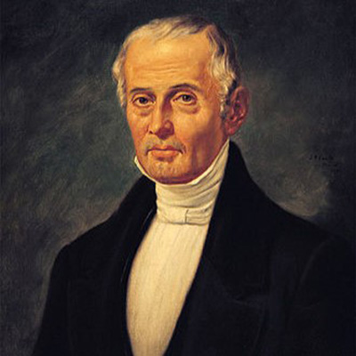
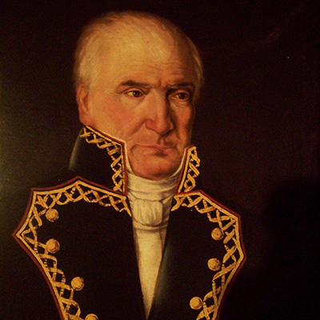
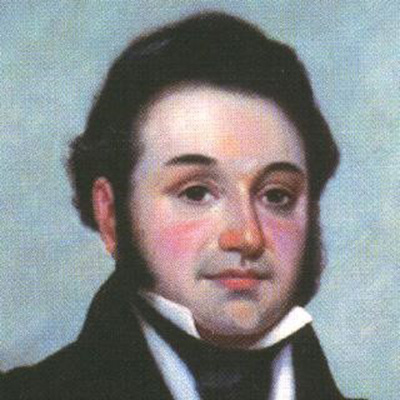

|
ANTECEDENTES BIBLIOGRAFÍAS |
¿Qué la formaba?Constitución de 1824 quedó conformada por 7 títulos y 171 artículos y esbozó una mezcla de antecedentes hispánicos y estadounidenses; es decir, una combinación de lineamientos provenientes de la Constitución liberal española. |
|  |  |  |
© 2024. Derechos reservados.
Elaborado por:ZAMORA (2024)
UABC
FEYRI